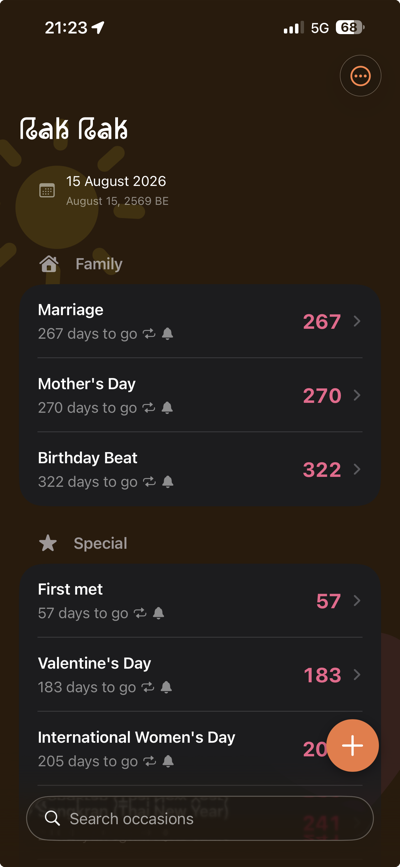
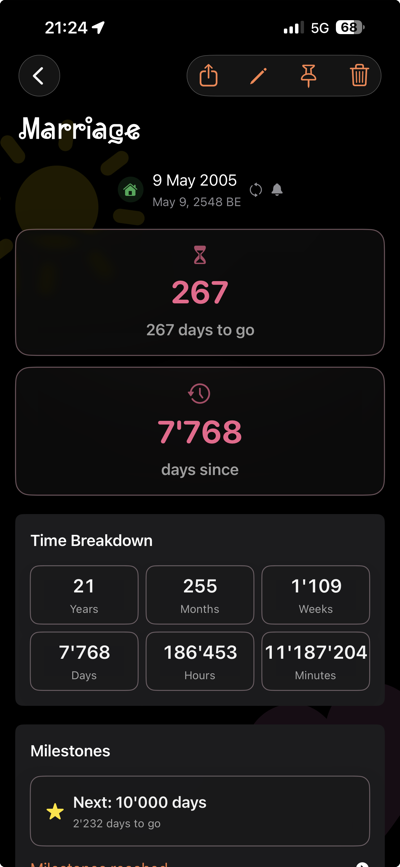
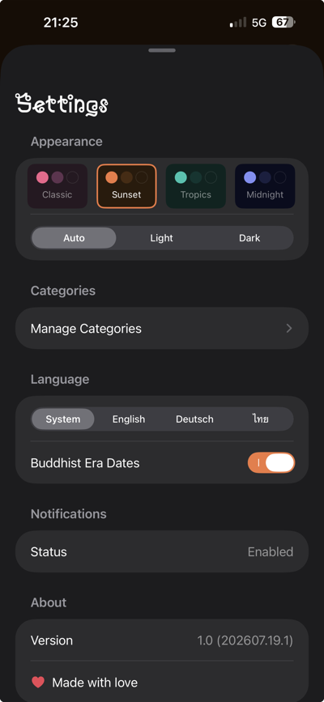

RakRak TestFlight
Relationship date tracker. Keep track of moments that matter.
Platforms
iOS, iPadOS
Category
Personal
Distribution
TestFlight
Screens



Screens from the current TestFlight build.
RakRak keeps the dates that actually matter to you in one place — anniversaries, first meetings, small moments worth remembering — and counts down or up so you're never caught off guard.
No account, no cloud sync, no ads. Everything stays on your device.
Revision history
- 0.4.0Home Screen widget added
- 0.3.0iPad layout refined
- 0.2.0Initial TestFlight build